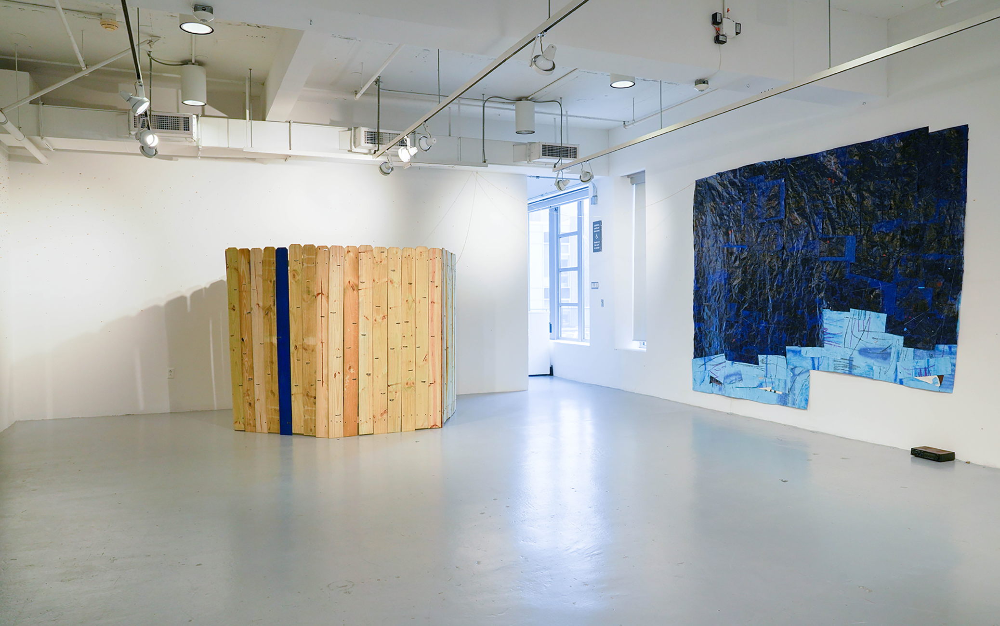
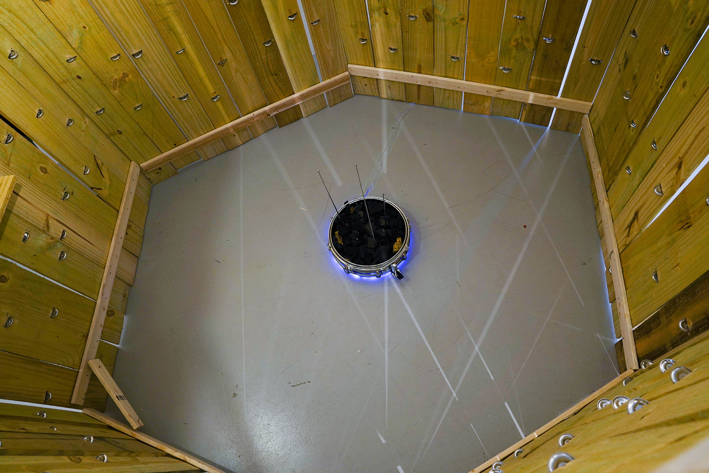
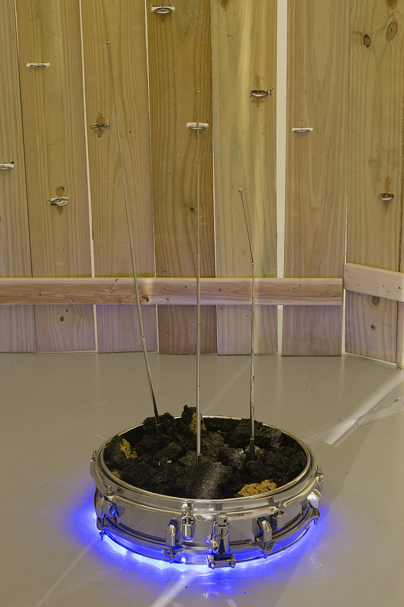
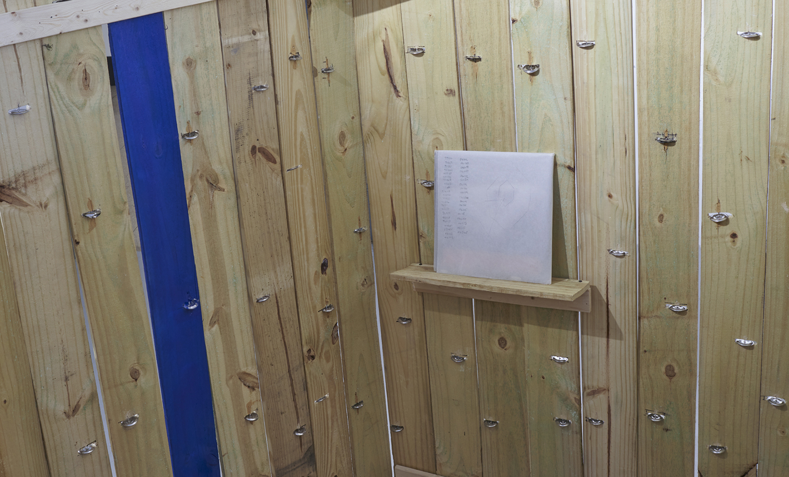
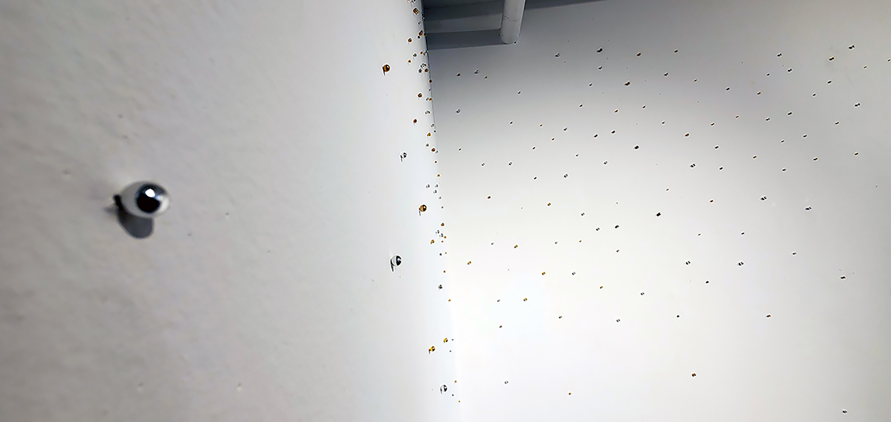
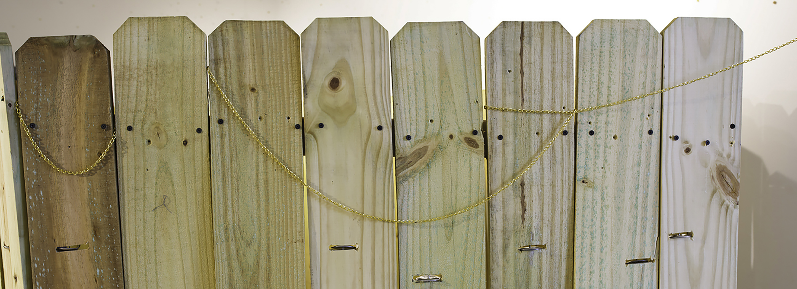
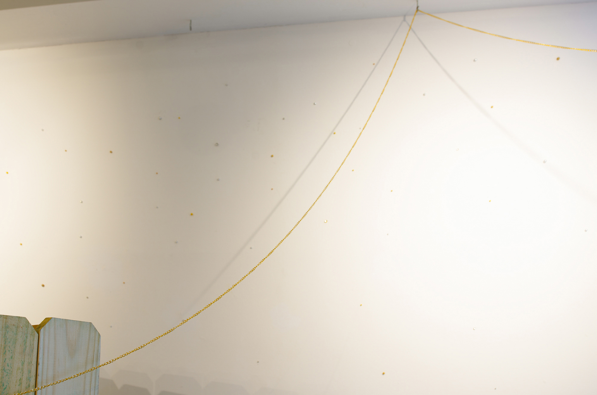
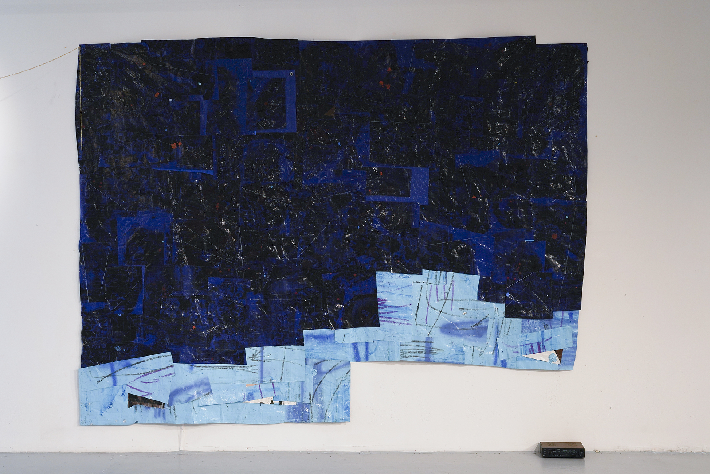
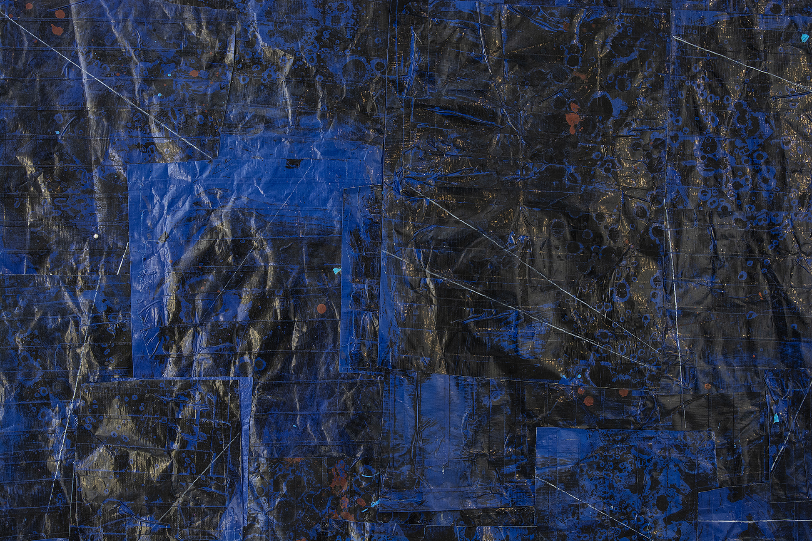
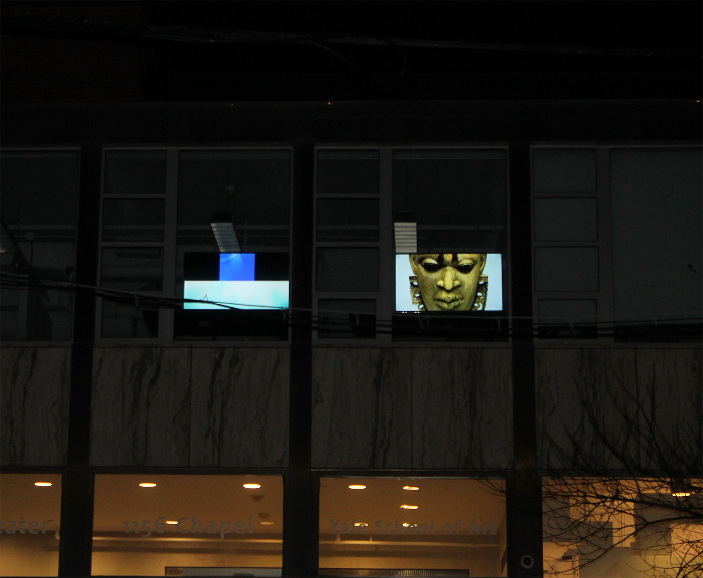

Nathaniel Donnett, installation image">
Nathaniel Donnett, The Birth of the Universe #1 2021, snare drum, radio/tv antennas, asphalt, led lights, 33 × 15″">
Nathaniel Donnett, The Birth of the Universe #1 2021, snare drum, radio/tv antennas, asphalt, led lights, 33 × 15″">
Nathaniel Donnett, Untitled 2021, album, tracing paper, graphite, 12 × 12″">
Nathaniel Donnett, Untitled 2020 - Ongoing, earring studs, walls, dimensions variable">
Nathaniel Donnett, Being - An Invisible Substance 2021, tambourine jingles, wooden fence posts, gold chain shelf, 72 × 108 × 71″">
Nathaniel Donnett, Being - An Invisible Substance 2021, Tambourine jingles, wooden fence posts, gold chain shelf, 72 × 108 × 71″">
Nathaniel Donnett, Gazegalactemystication (Blue Transit) 2021, tarp, plastic, duct tape, ink, china marker, aerosol paint, wax stick, paper, car audio speaker, audio wire, analog receiver, and cosmic noise, 98 × 138″">
Nathaniel Donnett, Gazegalactemystication (Blue Transit) 2021, tarp, plastic, duct tape, ink, china marker, aerosol paint, wax stick, paper, car audio speaker, audio wire, analog receiver, and cosmic noise, 98 × 138″">
Nathaniel Donnett, Documentation Still of 3 videos on 2 monitors Left Monitor – Color Study 1 – 22.30 min, 2021, Right Monitor- And: 11min 27sec, 2020, Right Monitor - Ascension: 4min 33sec, 2019, Two 55-inch Monitors, windows, architecture, tables, no sound">
Nathaniel Donnett is a cultural practitioner whose practice occupies both metaphysical and phenomenological spaces. Donnett applies refusal strategies by cultivating his oeuvre, inserting polyrhythms into the poetics and prosaics of everyday life. His work challenges and collapses traditional modes of linear timeline narratives through the use of radical fractal theory, the black aesthetic tradition, notions of incompleteness, and ideas of pursuance.